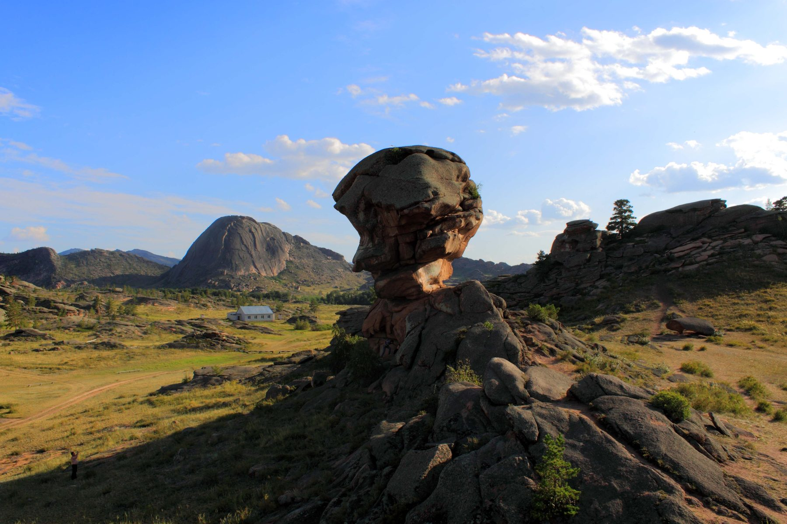

Yerkenkyzy Aruzhan
Front-end & structure
Worked on responsive layout, navigation, destinations and project organization.

We built Unseen Kazakhstan as a responsive multi-page project that combines design, JavaScript interaction, jQuery and public API data.
Every member contributed to structure, design, content, testing and interactive features.
Worked on responsive layout, navigation, destinations and project organization.
Worked on visual consistency, regional content, cards and responsive presentation.
Worked on forms, validation, travel content and interactive user experience.
The site is designed for students, local travelers and visitors who want visual inspiration plus simple tools for choosing a place, checking conditions and preparing a route.